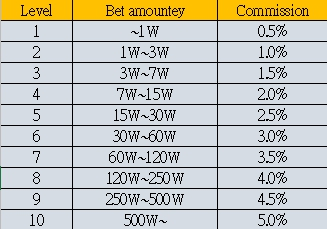
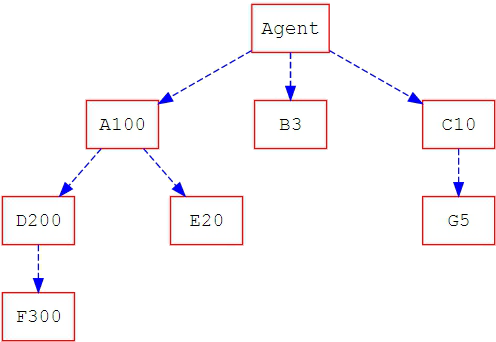
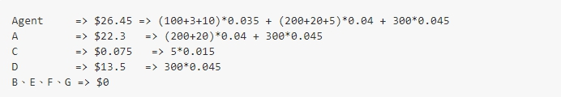

<div class="planRow row justify-content-center">
  <div class="col-md-8">
    <h2>合作營運計畫說明</h2>
    <li>
      代理人沒有門檻，不需要投入成本，人人可成為代理！只要成為此平台會員後，推薦新的會員輸入您的推薦代碼，系統將會自動將您升級成為代理人，推薦會員的投注金額會成為您的代理獎金(依照業績的不同會有不同的獎金算法)，而您推薦的會員再推薦新的會員您也會算業績在您身上(最多三層)，持續推廣分支，不一會兒，將發現您的獎金很可觀！
    </li>
    <h2>抽庸對照表</h2>
    
    <h2>範例</h2>
    
    <li>
      以上圖為例子，框框內英文字代表代理人所推薦的會員，數字為該會員的有效投注金額(萬)，Agent(代理人)推薦了三位會員(A、B、C)，三位又個別推薦(A會員推薦了D會員；D會員又推薦了F會員；C會員推薦了G會員)，最後形成這樣的分支(最多三層)。
    </li>
    <li>
      依照抽庸對照表各代理人業績算法如下(單位 萬) :
    </li>
    
  </div>
</div>
